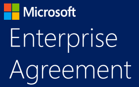

Статьи
Томское предприятие в тренде цифровизации
2 марта 2022 года Президент Российской Федерации подписал Указ № 83 «О мерах по обеспечению ускоренного развития отрасли информационных технологий в РФ». Специалисты Отдела информационно-технического обеспечения НПП «Томская электронная компания» ведут около 30 систем электронной отчетности и различных электронных сервисов по разным направлениям — метрология, финансы, тендеры, взаимодействие с заказчиками и поставщиками и др. Томская […]
«Томская Электронная Компания» внедрила около тридцати решений в сфере цифровизации бизнеса
Как следует из сообщения НПП «Томская электронная компания», специалисты отдела информационно-технического обеспечения предприятия используют около 30 систем электронной отчетности и различных цифровых сервисов. Отмечается, что цифровизация затронула метрологическое обеспечение, финансовый блок, работу с тендерами, взаимодействие с заказчиками и поставщиками и другие процессы внутри компании. В частности, предприятие одним из первых внедрило систему, основанную на технологии […]
Softline и Microsoft заключили соглашение Enterprise Agreement с ООО НПП ТЭК

Представительство компании Softline в Томске объявляет о заключении соглашения Microsoft Enterprise Agreement (EA) на поставку программного обеспечения Microsoft с ООО «Научно-производственное предприятие «Томская электронная компания» (ООО НПП ТЭК). ООО НПП ТЭК – разработчик и поставщик интеллектуального электротехнического оборудования, приборов контроля, регулирования и управления, программно-технических средств автоматизации. Основными объектами автоматизации и сферой применения создаваемых устройств являются […]
НПП «Томская электронная компания» и «Утилекс АйТи» подводят итоги первого этапа внедрения ERP-системы

Научно-производственное предприятие «Томская Электронная Компания» и Компания «Утилекс АйТи», российский поставщик услуг в области ИТ и консалтинга, завершили первый этап внедрения системы управления предприятием на базе Microsoft Dynamics AX. В результате первого этапа внедрения решена задача автоматизации процессов учета и планирования материальных ресурсов компании для разработки новых продуктов, серийной продукции и проектной деятельности. За счет […]